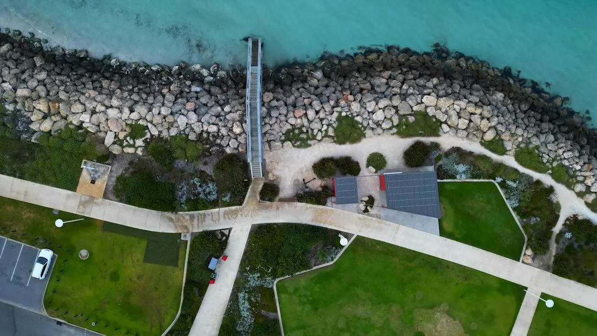

A Perth retaining wall commonly costs about $250 to $600 per square metre of wall face installed, with GST, excavation, drainage and difficult access excluded. A wall generally needs a WA building permit once it retains more than 0.5 metres of ground, although boundary work, adjoining land and related building work can change the result. Material choice should reflect whether the block sits on coastal sand, near-surface rock or steeper Scarp ground.
For homeowners comparing retaining wall contractors perth options, the practical decision is how material, ground conditions, drainage, approval requirements and access will affect the finished wall.
Retaining Wall Contractors Perth Explained
A useful starting point is the published guidance from Perth Retaining Walls, which connects wall selection with Perth ground conditions. On the coastal sand plain, a wall may support a level building pad or hold back a sandy face. Limestone block is described as the material most commonly used for Perth walls because it is quarried locally and suits that setting.
The Darling Scarp presents a different project brief. Areas such as Kalamunda and Roleystone can involve steeper slopes, shallow soil over rock and drainage that must work through a wet Perth winter. Around the Swan Valley, clay-prone alluvial ground is another factor to raise during the site discussion. These are not interchangeable conditions, so a quote should explain the assumed ground profile rather than list a material without context.
Before requesting prices, record the approximate wall length, retained height, access route, nearby structures, boundary position and whether the wall will create or protect a level area. Photos from several angles help a contractor understand the site before arranging a visit.
Compare systems against the job
There is no single best wall system for every Perth block. Limestone can suit common sandy-soil applications, while concrete post-and-panel systems may be considered for taller or longer runs. Timber sleepers can work for low garden terracing, and besser block, rock or boulder construction may suit a different visual or structural brief. The comparison should be tied to height, length, soil, drainage, access and the intended use of the retained area.
- Ask what ground condition the recommendation assumes.
- Ask how drainage and subsoil systems are included in the design and quote.
- Ask whether supply and installation are both included.
- Ask which parts of the proposal depend on council confirmation or design documentation.
For a second perspective on the distinction between a wall project and broader local retaining-wall information, see this guide to retaining walls in Perth. Treat any online estimate as a starting point until the actual access, excavation and drainage requirements are checked.
Cost signals that change the quote
The published Perth estimate is roughly $250 to $600 per square metre of wall face installed. That range is indicative, not a binding offer, and it excludes GST, excavation, drainage and difficult access. Material, height and access can move a project within or beyond that initial comparison, especially where the wall requires structural design or permit-related work.
A written quote is easier to compare when it separates the wall system from site preparation. Ask whether the price includes excavation, spoil handling, drainage, delivery, installation, engineering or certification, and any reinstatement needed around the finished wall. Also ask which assumptions would trigger a revised price.
Do not compare two totals until their scope is aligned. A lower figure may exclude drainage or excavation, while a higher figure may include design and approval tasks. The useful next step is to supply the same measurements, photographs and access notes to each contractor.
Approval questions for Western Australia
The supplied guidance identifies 0.5 metres as the general building-permit threshold in Western Australia. It also refers to AS 4678 design requirements and the Certificate of Design Compliance, known as the BA3 process, for relevant engineered work. A wall at or below the threshold is not automatically free from approval questions.
The exemption described on the source page applies only where the wall retains no more than 0.5 metres of ground and is not associated with other building work, does not affect adjoining land, and is not on a boundary or substantial dividing fence. Local government interpretation should be confirmed before construction begins.
Put these questions in writing:
- What height is the wall retaining at its highest point?
- Is it close to a boundary, dividing fence, building or adjoining property?
- Does the proposed work protect or affect neighbouring land?
- Is design documentation or a Certificate of Design Compliance required?
- Which local government should confirm the approval position?
Who this guide applies to
This guide is for Perth metropolitan homeowners planning a new retaining wall, replacing a failing or unsuitable wall, creating a level building pad, terracing a garden or managing a change in ground level near a boundary. It is also useful for people comparing limestone, post-and-panel, besser block, timber sleeper, rock and boulder options before seeking a written quote.
It is less useful as a substitute for a site assessment where the retained height, ground profile, drainage path or relationship with adjoining land is unclear. Those details determine whether a simple landscaping discussion is enough or whether engineered retaining walls and approval documentation need to be considered. Ask the contractor to state the assumptions behind the recommendation and to identify what must be confirmed with the relevant council.
- Measure the wall. Record approximate length, retained height and the location of nearby buildings, fences and boundaries.
- Document the site. Take photographs showing the slope, access route, soil surface, existing wall and areas where water may collect.
- Check approval. Ask the relevant local government whether the proposed height, boundary position or related building work requires approval.
- Compare systems. Request an explanation of why limestone, post-and-panel, timber or another system suits the block.
- Request a written scope. Ask for a quote that identifies excavation, drainage, supply, installation, design and certification inclusions.
| Option | Often considered for | Questions to resolve |
|---|---|---|
| Limestone | Coastal sand plain and common residential walls | Height, drainage, access and local ground conditions |
| Concrete post-and-panel | Taller or longer runs | Design requirements, panel system and installation scope |
| Timber sleeper | Low garden terracing | Expected height, ground profile and drainage |
| Besser block, rock or boulder | Projects with different structural or visual requirements | Engineering, access, supply and site preparation |
Common questions
How much does a retaining wall cost in Perth? The supplied estimate is roughly $250 to $600 per square metre of wall face installed. GST, excavation, drainage and difficult access are excluded, so the final written quote depends on the site and selected system.
When does a wall need a permit in WA? A retaining wall generally needs a building permit once it retains more than 0.5 metres of ground. Boundary work, adjoining land, related building work and local government requirements can affect the result, including for shorter walls.
Which material suits sandy Perth ground? Limestone is identified as Perth's most common retaining-wall material and is suited to the sandy Swan Coastal Plain. The recommendation still depends on wall height, drainage, access and the specific block.
What should a retaining-wall quote include? Ask whether the quote covers excavation, drainage, delivery, supply, installation, design, certification and reinstatement. Confirm which assumptions could change the price.
This guide covers Perth retaining-wall material choices, cost signals, site information and Western Australian approval questions.